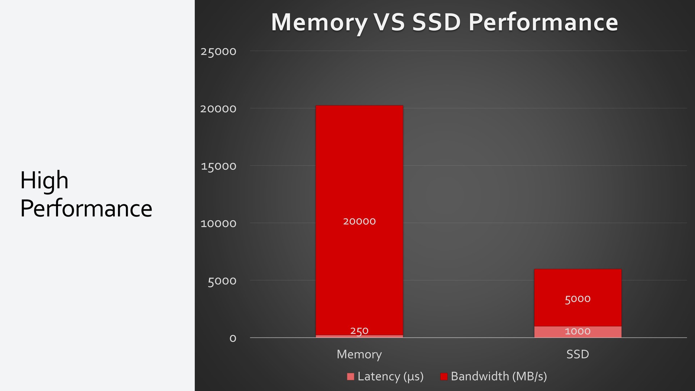

Introduction to Redis as a Technology
Redis, standing for REmote DIctionary Server, is an open-source, in-memory data structure store. It's widely used as a database, cache, and message broker. With its unique set of features and unparalleled speed, it's a crucial tool for a modern developer's toolkit.
Key Features of Redis
Redis supports various kinds of data structures like strings, hashes, lists, sets, sorted sets with range queries, bitmaps, hyperloglogs, and geospatial indexes with radius queries. This wide array of data types and its ability to perform atomic operations make Redis extremely versatile for solving a myriad of problems.

High Performance and Speed
This support for a wide array of fundamental computational storage data structures is what sets Redis apart, and enables blazing speed when applied correctly. As an in-memory data store, reading and writing data happens exceedingly fast. This makes Redis an excellent choice for applications that require real-time data processing.

Durability and Persistence
Even though Redis is an in-memory data store, it provides mechanisms to achieve data persistence. You have the flexibility to choose from options like snapshotting and append-only files (AOF), depending on your application's needs.
Scalability and High Availability
Redis has robust features like replication, Lua scripting, transactions, and different levels of on-disk persistence. With the help of Redis Sentinel, it provides high availability via automatic partitioning across multiple Redis nodes. It is also widely supported on major cloud providers as a managed service, like on AWS under the ElastiCache product.

Extensible and Versatile
You can extend Redis functionality using Redis modules. It's also a good fit for job & queue management, caching, real-time analytics, and many other use-cases.
Before we dive into using the ServiceStack.Redis .NET client, we will need a locally running Redis server. The easiest way to get this working is by using the official Redis Docker image, and using Docker Desktop to run it.
Setting Up a Local Redis Server with Docker
To follow along with this tutorial, you will need a running instance of Redis. One of the easiest ways to get this set up is through Docker, which allows you to run a Redis server within a container on your machine.
If you do not have Docker installed, you can download it from the official Docker website.
Once you have Docker installed and running, you can set up a Redis instance with the following command:
docker run --name local-redis -p 6379:6379 -d redis
This command tells Docker to run a container with the name "local-redis", using the official Redis image from Docker Hub. The -p flag maps the default Redis port (6379) from the container to your local machine, and the -d flag tells Docker to run the container in the background.
To confirm that your Redis server is running correctly, you can use the following command:
docker ps
This command lists all running Docker containers. If everything is set up correctly, you should see your "local-redis" container in the list.
Now, your local Redis server is running and ready to be connected on localhost:6379.
For more detailed information about Docker commands, you can refer to the official Docker documentation.
Using the redis-cli from Docker
Another way to validate your local Redis Docker container is running and access it is by using the Redis-CLI.
If you don't have the Redis-CLI, we can actually use it from the same redis Docker image using the following command.
docker run -it redis /bin/bash -c "redis-cli -h host.docker.internal"
host.docker.internalis a way of accessing the Docker host containers, however it may only work on Windows & macOS.
Installing and Setting Up ServiceStack.Redis in Your Project
Now that we have our local Redis server set up and running, let's move on to adding ServiceStack.Redis to your .NET project. Here we will demonstrate this process in a .NET Console application for simplicity.
To start with, make sure you have the .NET SDK installed on your system. Once you have the SDK, you can create a new Console application with the following command:
dotnet new console -n RedisConsoleApp
After creating your Console application, navigate to the project directory:
cd RedisConsoleApp
Then, add the ServiceStack.Redis NuGet package:
dotnet add package ServiceStack.Redis
Now you have successfully added the ServiceStack.Redis library to your project. In your Program.cs, you can import the library using:
using ServiceStack.Redis;
You are now set to start using Redis in your .NET console application.
Using the ServiceStack x tool
For developers working on larger projects or who want a quicker setup, ServiceStack provides a .NET tool called x. You can install this tool using the following command:
dotnet tool install --global x
This tool allows you to create new projects and add (mix in) functionality quickly and easily. To create a new web project, you can use the following command:
x new web ProjectName
To add Redis support to your project, navigate to your project directory and then use the mix command:
cd ProjectName
x mix redis
This automatically adds the ServiceStack.Redis library to your project and sets up a basic Redis configuration.
For further information on using the x tool, refer to the ServiceStack x tool documentation.
Connecting and Using Redis Client Managers
In the previous section, we installed and set up the ServiceStack.Redis library in our .NET Console application. Now, let's learn how to use the Redis Client Managers provided by this library to interact with Redis.
ServiceStack.Redis provides a few different client managers, but for this tutorial, we will use RedisManagerPool. This client manager is a simple and efficient pool of Redis clients that is suitable for most use cases.
Connecting to Redis
To start, you will first need to establish a connection to your Redis server. You can do this by passing your Redis server's connection string to the RedisManagerPool constructor:
var manager = new RedisManagerPool("localhost:6379");
Now that you have a manager, you can get a Redis client instance from it:
using (var redis = manager.GetClient())
{
// You can now use `redis` to interact with your Redis server.
}
Using the Client with .NET Core Dependency Injection
If you are building a web application with .NET Core, you might want to make use of .NET Core's built-in dependency injection (DI) to manage your Redis clients. Here is how you can register your RedisManagerPool with the DI container:
public void ConfigureServices(IServiceCollection services)
{
services.AddSingleton<IRedisClientsManager>(new RedisManagerPool("localhost:6379"));
// Add other services...
}
Now, the DI container will manage the lifecycle of the RedisManagerPool, and you can inject IRedisClientsManager into your services:
public class MyService : Service
{
public IRedisClientsManager RedisClientsManager { get; set; }
public void Any(Request request)
{
using (var redis = RedisClientsManager.GetClient())
{
// Use `redis` to interact with your Redis server.
}
}
}
If you are using ServiceStack, you can simply use the base.Redis property from the Service base class to resolve a Redis client:
public class MyService : Service
{
public void Any(Request request)
{
var redis = base.Redis;
// Use `redis` to interact with your Redis server.
}
}
Leveraging the Simplicity of ICacheClient
ServiceStack's ICacheClient is an abstraction over caching operations, which allows you to interact with various cache implementations in a standard way. Once IRedisClientsManager is registered in the IoC container, ServiceStack switches the implementation of ICacheClient to use Redis as its backend.
In ServiceStack services, you can easily access the cache via the base.Cache property of the Service base class. Here is an example of how you can use the Get and Set methods to work with Redis cache:
public class MyService : Service
{
public object Any(Request request)
{
var cacheKey = "unique-cache-key";
var existingValue = base.Cache.Get<string>(cacheKey);
if (existingValue == null)
{
existingValue = "This is a value from some expensive operation";
base.Cache.Set(cacheKey, existingValue);
}
return new { Value = existingValue };
}
}
This example checks if a value is available in the cache. If the value is not present, it performs an expensive operation to get the value (in this case, we're just setting a string), then stores the value in the cache for subsequent requests.
The ICacheClient interface also supports asynchronous operations. If you want to use the async versions of these methods, you can use the base.CacheAsync property of the Service base class:
public class MyService : Service
{
public async Task<object> Any(Request request)
{
var cacheKey = "unique-cache-key";
var existingValue = await base.CacheAsync.Get<string>(cacheKey);
if (existingValue == null)
{
existingValue = "This is a value from some expensive operation";
await base.CacheAsync.Set(cacheKey, existingValue);
}
return new { Value = existingValue };
}
}
By using ICacheClient, you can make your application agnostic of the underlying cache implementation, which promotes loose coupling and makes your application easier to test and maintain. You can learn more about the ICacheClient interface and its usage in the Caching providers documentation.
Using the RedisClient Directly
While using ICacheClient provides a high-level abstraction for caching operations, there might be situations where you would need direct access to the underlying Redis client for more granular control or to perform operations not covered by the ICacheClient interface.
You can use IRedisClient to interact directly with Redis using the commands provided by the Redis server. First, let's get an instance of IRedisClient:
using var redis = clientsManager.GetClient();
In this context, clientsManager is an instance of IRedisClientsManager, which is already registered in our .NET Core application's dependency injection container.
With an instance of IRedisClient, we can perform similar Get and Set operations as we did with ICacheClient:
var key = "unique-key";
var existingValue = redis.Get<string>(key);
if (existingValue == null)
{
existingValue = "This is a value from some expensive operation";
redis.Set(key, existingValue);
}
These operations directly correspond to the GET and SET commands in raw Redis:
GET unique-key
SET unique-key "This is a value from some expensive operation"
In addition to Get and Set, IRedisClient also exposes other Redis commands. For instance, you can use the Increment method to atomically increment the value of a key:
var counterKey = "counter";
redis.Increment(counterKey, 1);
The Increment method corresponds to the INCR command in raw Redis:
INCR counter
By using IRedisClient directly, you have access to the entire set of Redis commands and data structures, which makes it a powerful tool for more advanced use cases. To learn more about the IRedisClient interface and its usage, refer to the ServiceStack reference documentation site.
Async Usability of ServiceStack.Redis
One of the great strengths of the ServiceStack.Redis library is its comprehensive support for asynchronous operations via the async/await paradigm in .NET. This allows developers to perform non-blocking I/O operations with Redis, freeing up system resources and improving the efficiency and scalability of your application.
To make use of asynchronous operations, you'll want to get an instance of IRedisClientAsync:
using var redisAsync = await clientsManager.GetClientAsync();
In this context, clientsManager is an instance of IRedisClientsManager, which is already registered in our .NET Core application's dependency injection container.
Once you have an instance of IRedisClientAsync, you can perform async versions of the usual Redis operations. For instance:
var key = "unique-key";
var existingValue = await redisAsync.GetAsync<string>(key);
if (existingValue == null)
{
existingValue = "This is a value from some expensive operation";
await redisAsync.SetAsync(key, existingValue);
}
These operations are non-blocking and make use of the Task-based Asynchronous Pattern (TAP) in .NET. This means you can perform other work while waiting for the Redis operations to complete, improving the responsiveness of your application. This is particularly beneficial in web applications, where efficient handling of requests is critical for performance.
ServiceStack.Redis async support makes interacting with Redis from .NET applications familiar and straightforward, aligning with the asynchronous programming model in .NET. As such, you can leverage all the benefits of async/await while interacting with Redis in a manner consistent with the rest of your .NET codebase.
Storing Complex Objects: Strongly Typed Client API
One of the many powerful features of ServiceStack.Redis library is its support for storing complex objects using the Strongly Typed Client API. This feature provides a more natural and convenient way to work with custom Plain Old CLR Objects (POCOs) and data structures in Redis.
To use the Strongly Typed Client API, we start by obtaining an instance of the IRedisTypedClient<T>, which can be done using the As<T> method from an IRedisClient instance. Let's assume that we have a Person class defined as follows:
public class Person
{
public string Id { get; set; }
public string Name { get; set; }
public int Age { get; set; }
}
To store an instance of the Person class in Redis, we can do the following:
using (var redis = clientsManager.GetClient())
{
var redisPeople = redis.As<Person>();
var person = new Person
{
Id = "1",
Name = "John Doe",
Age = 30
};
redisPeople.Store(person);
}
In this example, the redisPeople variable is an instance of IRedisTypedClient<Person>. We can use this instance to call the Store method and save our Person instance to Redis. The ServiceStack.Redis library automatically handles the serialization and deserialization of our POCO.
Retrieving our Person instance is just as straightforward:
using (var redis = clientsManager.GetClient())
{
var redisPeople = redis.As<Person>();
var person = redisPeople.GetById("1");
Console.WriteLine($"Name: {person.Name}, Age: {person.Age}");
}
Here we used the GetById method from our redisPeople instance to retrieve the person with the Id "1" from Redis.
This way of working with complex objects in Redis using ServiceStack.Redis makes it seamless to integrate Redis into your .NET applications, as it aligns with .NET's object-oriented approach.
In the previous examples, we used the Store method of IRedisTypedClient<T> to store an instance of Person into Redis, and the GetById method to retrieve it. One important thing to note is that these methods automatically handle the generation of the key for Redis.
The key is generated based on the namespace and the class name of the object being stored, followed by the value of the primary key. This means that when you use Store, ServiceStack.Redis takes care of creating a key like urn:Person:1 for a Person instance with an Id of "1". This pattern also applies when retrieving data with GetById; ServiceStack.Redis knows to look for a key following this pattern.
This feature is particularly useful when used in combination with ServiceStack's OrmLite, a convention-based, configuration-free lightweight ORM. With OrmLite, you can use the same POCO classes for both your database and Redis operations. The automatic key generation from ServiceStack.Redis aligns with OrmLite's conventions, providing a consistent and intuitive pattern for data storage and retrieval across both systems. This alleviates the need to manually manage keys, allowing developers to focus on working with their data in a more natural, object-oriented manner.
For more information about ServiceStack's OrmLite, check the ServiceStack.OrmLite documentation.
Working with Redis Data Structures
In Redis, one of the powerful features is its support for different types of data structures. While key-value storage is fundamental, Redis goes beyond this and provides the ability to manipulate lists, sets, sorted sets, and hashes as well.
ServiceStack.Redis library provides an intuitive interface to work with these data structures in a way that feels familiar to .NET developers. This is achieved through properties exposed on the IRedisClient interface, each corresponding to one of Redis's data structures.
Here are examples of how to interact with Lists, Sets, and SortedSets using ServiceStack.Redis:
Lists
A Redis list is a simple list of strings, sorted by insertion order. You can work with lists in ServiceStack.Redis through the Lists property.
var redis = redisManager.GetClient();
// Add new elements to a Redis list
redis.Lists["urn:mylist"].Add("item1");
redis.Lists["urn:mylist"].Add("item2");
// Fetch all elements in the list
var myList = redis.Lists["urn:mylist"].GetAll();
Sets
A Redis set is an unordered collection of unique strings. In ServiceStack.Redis, you can work with sets through the Sets property.
var redis = redisManager.GetClient();
// Add new elements to a Redis set
redis.Sets["urn:myset"].Add("item1");
redis.Sets["urn:myset"].Add("item2");
// Check if an item exists in the set
bool exists = redis.Sets["urn:myset"].Contains("item1");
Sorted Sets
A Redis sorted set is similar to a regular set, but each value is associated with a score, which is used to sort the set. It's through the SortedSets property that ServiceStack.Redis allows interaction with sorted sets.
var redis = redisManager.GetClient();
// Works with TypedClients as well.
var typedClient = redis.As<MyClass>();
// Add new elements to a Redis sorted set
typedClient.SortedSets["urn:mysortedset"].Add(new MyClass(), 1);
typedClient.SortedSets["urn:mysortedset"].Add(new MyClass(), 2);
// Fetch all elements in the sorted set
var mySortedSet = typedClient.SortedSets["urn:mysortedset"].GetAll();
As you can see, ServiceStack.Redis makes it easy to work with Redis data structures in a manner that's familiar to .NET developers. With these powerful features at your disposal, you can implement complex data storage and retrieval operations with ease. For a deeper dive into these data structures and their usage, please refer to the Redis data types documentation.
Conclusion: The Power of Redis and ServiceStack.Redis
Throughout this tutorial, we've explored the basics of Redis as a technology and have seen how the ServiceStack.Redis library can make interacting with Redis from a .NET environment feel natural and intuitive. However, what we've covered just scratches the surface of what can be achieved with this powerful combination.
With Redis, we have at our disposal a high-performance, feature-rich in-memory database that supports various data structures. Combined with the real-time data replication, persistence options, and high availability features, Redis is a versatile tool that can suit a wide array of application needs.
On the other hand, ServiceStack.Redis bridges the gap between the .NET ecosystem and Redis. Its ability to leverage .NET's async/await syntax, work with complex POCO objects, manage connections efficiently, and provide an idiomatic interface to Redis's data structures, truly makes it a powerful tool for any .NET developer looking to utilize Redis.
If you have suggestions, corrections, or ideas to improve this content, please do share them. Your insights will help us refine this tutorial and better serve readers like you. You can reach out to us via Discord, GitHub Discussions or our Customer Forums.